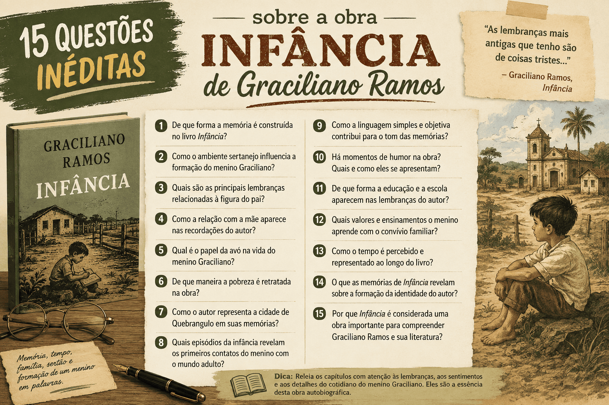

Simulado: 15 Questões Estilo PAES UEMA sobre a obra infânciaem> de Graciliano Ramos
Chegou o momento de colocar a teoria em prática! Para garantir um alto desempenho na prova de Literatura do vestibular, não basta apenas conhecer o resumo da obra; é essencial treinar o olhar analítico exigido pela banca. O simulado a seguir traz 15 questões inéditas e de nível avançado sobre Infância, de Graciliano Ramos. As perguntas foram desenhadas para testar seu domínio sobre as características do neorrealismo, o determinismo social e psicológico, e a interpretação crítica dos trechos mais cobrados. Resolva o teste com atenção e utilize o gabarito comentado ao final para mapear seus acertos e consolidar sua preparação para o PAES UEMA.

Simulado com 15 questões sobre a obra Infância de Graciliano Ramos
Quiz — 15 questões sobre a obra Infância para o PAES UEMA (nível avançado)
Questão 1 — Leia o fragmento inicial da obra:
"A primeira coisa que guardei na memória foi um vaso de louça vidrada, cheio de pitombas, escondido atrás de uma porta. Ignoro onde o vi, quando o vi, e se uma parte do caso remoto não desaguasse noutro posterior, julgá-lo-ia sonho."
A partir do fragmento, conclui-se que o processo de rememoração na obra de Graciliano Ramos caracteriza-se por ser:
Questão 2 — No capítulo "Um cinturão", o pai espanca brutalmente o menino porque não encontra uma tira de couro. A repetição mental da pergunta paterna "Onde estava o cinturão?" gera um trauma no protagonista. Na obra, esse episódio simboliza:
Questão 3 — Em Infância, a figura da mãe costuma chamar o protagonista por apelidos depreciativos, como "bezerro-encourado" e "cabra-cega". Do ponto de vista psicológico do narrador adulto, o uso dessas expressões pela mãe:
Questão 4 — O episódio em que o pai de Graciliano manda prender o inofensivo mendigo Venta-Romba, movido por um susto e por vaidade, revela um importante aspecto da obra alinhado à Geração de 30. Trata-se da:
Questão 5 — Leia o trecho:
"Queres tu brincar comigo? O passarinho, no galho, respondia com preceito e moral. E a mosca usava adjetivos colhidos no dicionário. (...) Ridículo um indivíduo hirsuto e grave, doutor e barão, pipilar conselhos, zumbir admoestações."
A repulsa do narrador ao livro do Barão de Macaúbas fundamenta uma das críticas sociopedagógicas mais fortes de Infância, que aponta para:
Questão 6 — Em certo momento, o menino Graciliano vê o "moleque José" sendo brutalmente espancado pelo pai na cozinha. O protagonista, em vez de se condoer, tenta espetar as solas dos pés do garoto negro com um pedaço de lenha. Essa atitude demonstra:
Questão 7 — No capítulo "O menino da mata e o seu cão Piloto", a prima Emília confisca a brochura lida pelo menino sob a alegação de ser uma obra de "protestantes" que visava enganar os tolos e levar almas ao inferno. No contexto da obra, essa proibição ilustra:
Questão 8 — Em "Um incêndio", uma mulher morre carbonizada ao mergulhar em chamas para tentar resgatar uma imagem de Nossa Senhora. A representação da morte no relato, descrevendo o cadáver como "um toco chamuscado" exalando purulência, tem a função neorrealista de:
Questão 9 — Diversas professoras, como D. Maria do Ó, são descritas por seus métodos fundamentados em berros e palmatórias. Ao lado delas, a figura do aluno perseguido no capítulo "A criança infeliz" serve para atestar que:
Questão 10 — Em meio à violência e rejeição geral, o protagonista encontra breves momentos de alívio ou distração lúdica em figuras marginalizadas, como o vaqueiro José Baía e a negra velha Vitória. Esse contraste evidencia:
Questão 11 — O determinismo em Infância difere do determinismo biológico mecanicista do Naturalismo do século XIX. Em Graciliano Ramos, o peso determinante que molda a covardia e o pessimismo do protagonista decorre predominantemente:
Questão 12 — Sobre as figuras femininas Mocinha (irmã natural) e Adelaide (prima enviada à escola), é correto afirmar que, na arquitetura neorrealista do romance, elas simbolizam:
Questão 13 — No episódio em que o professor insiste na pronúncia "Samuel Smailes", sendo corrigido equivocadamente pelos frequentadores da loja que preferem "Samuel Símiles", o protagonista apega-se à voz da autoridade do mestre. Essa passagem revela:
Questão 14 — A respeito da sintaxe e da linguagem utilizadas por Graciliano Ramos na elaboração dessas memórias, assinale a opção correta:
Questão 15 — Analise as asserções abaixo sobre Infância:
I. A obra expõe a alienação da educação institucional e a opressão promovida no âmbito intrafamiliar.
II. O medo atua como o principal agente na formação da personalidade covarde e introspectiva da criança.
III. Graciliano Ramos apresenta uma visão otimista de ascensão social impulsionada unicamente pelo mérito individual.
IV. As memórias servem como uma radiografia da estrutura de poder, do coronelismo e da brutalidade naturalizada no Nordeste do início da República.
Estão corretas:
Resumo para revisão
- Infância (1945) expõe o amadurecimento doloroso e seco de Graciliano Ramos no sertão nordestino.
- O Determinismo evidencia-se na opressão incontornável do meio geográfico (seca/fome) e social (patriarcado).
- O Neorrealismo da obra alia as chagas da memória infantil à pesada crítica socio-histórica e política da década de 30.
- A figura paterna e materna exercem uma autoridade pautada no medo, na agressão gratuita e na absoluta ausência de empatia.
- A escola primária é retratada como mecanismo inútil de repressão e tortura (D. Maria do Ó e livros pedantes).
- O crítico Octavio de Faria reforça que o pessimismo gracilianense germina sucessivamente dos "choques" de rejeição recebidos.
- A partir da óptica da criança, Graciliano denuncia as engrenagens de humilhação, racismo e covardia na velha ordem do Brasil agrário.
Conclusão
Infância vai muito além do simples registro memorialístico. Trata-se de uma dissecação sociológica brilhante em que Graciliano Ramos, utilizando sua própria experiência como ponto de partida, demonstra na prática os conceitos de Determinismo e Neorrealismo. Ele documenta com precisão assustadora como a escassez material, a violência institucionalizada e o desamor destroem as possibilidades da infância.
Para dominar esse assunto nas provas, lembre-se sempre de interligar a opressão familiar sentida pelo protagonista com as macroestruturas da Primeira República: o latifúndio autoritário, a fragilidade dos excluídos e os resquícios asfixiantes da escravidão que o neorrealismo literário buscou desnudar.
Perguntas frequentes
A obra Infância é um romance ficcional?
Não. Trata-se de um livro de memórias (autobiografia literária) no qual Graciliano Ramos relata seus primeiros anos de vida. Contudo, a obra possui um rigor estético tão elevado que seus capítulos funcionam quase como contos independentes, afastando-se de um simples diário pessoal.
Como o determinismo atua na obra?
O determinismo na narrativa mostra como o ser humano é esmagado pelas condições externas. O meio geográfico agressivo (a seca no sertão) e o meio social opressivo (os castigos físicos irracionais e a falta de afeto) limitam a autonomia do menino e moldam uma personalidade marcada pelo medo, pela passividade e pelo pessimismo.
Qual é a visão de Graciliano Ramos sobre a escola na sua infância?
A escola é retratada como um ambiente de tortura e alienação. O autor critica duramente os métodos baseados na força bruta (palmatórias e puxões de orelha aplicados por mestres como D. Maria do Ó) e o uso de livros pedantes e moralistas (como os do Barão de Macaúbas), que não dialogavam com a realidade da criança sertaneja.
Por que a infância retratada foge do padrão romântico tradicional?
Porque Graciliano destrói a idealização da infância como um período de pureza, alegria e inocência. Em sua obra, essa fase da vida é marcada pela angústia de não compreender o mundo dos adultos, pela opressão das autoridades patriarcais e pela sensação constante de inadequação e inferioridade.
Quais são as principais denúncias do Neorrealismo presentes no livro?
A narrativa expõe a crueldade da estrutura patriarcal e coronelista, a covardia das elites perante os mais fracos (como a prisão do mendigo Venta-Romba), a desumanização de ex-escravos e agregados (como o moleque José), além de criticar o fanatismo religioso que castrava a imaginação das crianças.
Conteúdos relacionados
Referências
- RAMOS, Graciliano. Infância. Rio de Janeiro: Livraria José Olympio Editora, 1955.
- FARIA, Octavio de. Graciliano Ramos e o Sentido do Humano (Ensaio em anexo à obra).
Explore Outros Conteúdos
Continue seus estudos acessando outras seções do site Mestre Kira: